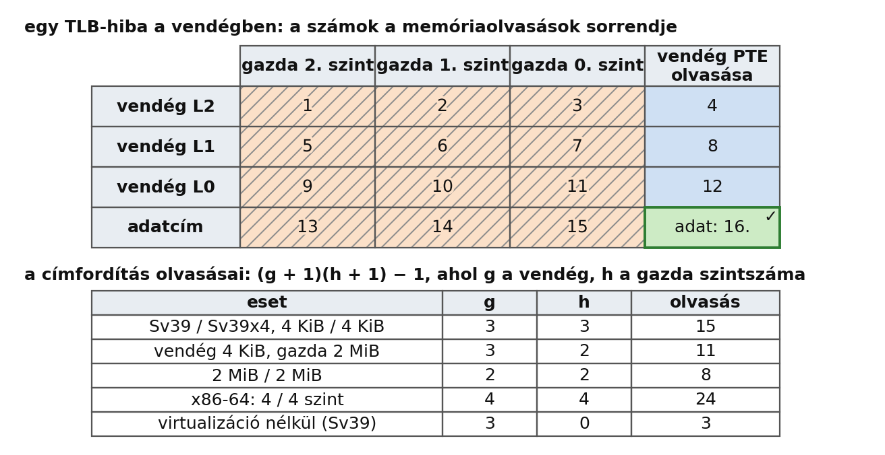

Egy C-program, amely egy hibás mutatón át a saját kódját vagy a rendszermag memóriáját próbálja írni, azonnal laphibát kap, az operációs rendszer leállítja, a többi folyamat pedig zavartalanul fut tovább. Ezt nem a programnyelv és nem az operációs rendszer valamilyen utólagos ellenőrzése biztosítja, hanem a processzor, amely minden egyes memória-hozzáférésnél, a fordítás részeként eldönti, szabad-e.
Virtuális gépben még egy réteg kerül a rendszer alá, és ennek ára van: egy TLB-hiba Sv39-cel nem 3 (Lapozás és többszintű laptáblák), hanem akár 15 memóriaolvasást igényel. Ez az alfejezet a hardveres védelem eszközeit, a virtualizáció címfordítását és az eszközök memória-hozzáférésének korlátozását tekinti át, végül azt, amit mindez nem véd.
A címfordítás egy kapu, amelyen minden hozzáférés áthalad, és a kapunál ellenőr áll. A fordítási bejegyzés nemcsak azt mondja meg, hová vezet az út, hanem azt is, ki mehet be, és mit tehet bent: olvashat, írhat, utasítást futtathat. A felhasználói program nem tudja átírni a belépési szabályokat, mert a táblákat csak a rendszermag éri el.
Virtualizációnál az ellenőrök megkettőződnek: a vendég operációs rendszer a saját táblájával fordít (vendég virtuális → vendég fizikai), de a „vendég fizikai” cím is csak látszat, a gazdagép (hipervizor) egy második táblával fordítja tovább. A vendég nem tudja, és nem is tudhatja befolyásolni, hová kerül végül az adat.

Figyeld meg a mátrix sorait: a vendég minden egyes bejegyzése előtt a gazda teljes bejárása lefut, és még a végén, a már megtalált adatcímre is.
Definíció. A lapvédelem a levélbejegyzés jogosultságbitjei (R, W, X, U) és a processzor privilégiumszintje (Kivételek, megszakítások és privilégiumszintek) alapján engedélyezi vagy tiltja a hozzáférést; tiltásnál a hozzáférés laphibát okoz (Lapozás és többszintű laptáblák).
A RISC-V szabályai [S-RISCV-ISA]:
| Hozzáférés | Felhasználói (U) mód | Rendszer (S) mód |
|---|---|---|
| lap U = 1 | R, W, X szerint | olvasás, írás csak SUM = 1 esetén; végrehajtás tiltott |
| lap U = 0 | tiltott | R, W, X szerint |
A táblázat lényege: a felhasználói program a rendszermag lapjaihoz
egyáltalán nem fér, a rendszermag pedig alapesetben a felhasználói
lapokhoz sem. Két kiegészítő állapotbit a sstatus
regiszterben:
Az x86-64-nek hasonló eszközei vannak: a felhasználói/rendszer bit, a végrehajtás-tiltó (NX) bit, valamint a SMEP és SMAP funkció, amely a rendszermagnak tiltja a felhasználói lapok végrehajtását, illetve elérését (ellenőrizendő: Intel SDM, CPU-függő).
Definíció. A W^X (write xor execute) elv: egy lap egyszerre ne legyen írható és végrehajtható. Ha betartják, egy memóriahibán keresztül beírt adat nem futtatható közvetlenül kódként. Ez operációsrendszer-politika, amelyet a hardver a W és X bittel tesz érvényesíthetővé; futásidőben kódot generáló programok (JIT) ezért írás után átállítják a lap jogosultságát.
A jogosultságbitek a fordítással együtt kerülnek a TLB-bejegyzésbe. TLB-találatnál az ellenőrzés a címkeösszehasonlítással párhuzamosan, a hozzáférés részeként történik, hibánál a bejárás végén. A tiltott hozzáférés pontos kivételt okoz: az utasítás hatása nem lehet látható az architekturális állapotban (Regiszterátnevezés, ROB és spekuláció).
Fontos azonban a megvalósítás időzítése: egy sorrenden kívüli mag az ellenőrzés eredménye alapján a kivételt csak a véglegesítéskor érvényesíti, és ha a hardver a tiltott adatot ezalatt a függő utasításoknak átadja, azok spekulatívan dolgozhatnak vele. Ez az eredményt nem teszi láthatóvá, de a cache állapotát módosíthatja. A Spectre és Meltdown ezt a rést vizsgálja.
Továbbvitt eredmény. A jogosultságellenőrzés a címfordításnál, a TLB-bejegyzés bitjei alapján történik; a tiltott hozzáférés pontos kivétel, de az, hogy a mikroarchitektúrában mikor és mit lát egy függő utasítás, megvalósításfüggő. Erre a Spectre és Meltdown és a Rowhammer és hardveres biztonsági funkciók épít.
A hipervizor (virtual machine monitor) több vendég
operációs rendszert futtat egy gépen. A hardveres virtualizáció két
dolgot ad: a vendég privilegizált műveletei, ha kell, trapet okoznak a
hipervizorba, és a memória fordítása kétlépcsős lesz. A
RISC-V H (hypervisor) kiterjesztése a rendszermód mellé
a virtualizált VS és VU módot vezeti be, a vendég táblájára a
vsatp, a gazdáéra a hgatp regisztert. A
második lépcső sémája (Sv39x4) a vendég fizikai címét 41 bitesnek veszi,
a gyökértáblája ezért 16 KiB-os, 2048 bejegyzéses [S-RISCV-ISA]. Az x86
megfelelői az EPT (Intel) és az NPT (AMD) (ellenőrizendő: gyártói
dokumentáció).
Mivel a vendég laptáblái is vendég fizikai címeken vannak, minden vendég-PTE elolvasása előtt a gazdatáblán kell végigmenni. Ha a vendég tábla , a gazda szintű, a fordítás
memóriaolvasást igényel: vendég-PTE és a végső cím, azaz gazda-bejárás olvasással, plusz PTE-olvasás. Sv39 és 4 KiB-os lapok mindkét oldalon: ; a nagy lapok szintszámot spórolnak. Ezért a processzorok a teljes (vendég virtuális → gazda fizikai) fordítást cache-elik a TLB-ben, külön bejegyzéseket tartanak a köztes szintekre, és a hipervizorok lehetőleg nagy lapokkal képzik le a vendég memóriáját. Egy TLB-hiba így is sokkal drágább lehet, mint natív futásnál, ezért a TLB lefedettsége (TLB, nagy lapok és a VIPT cache) itt még fontosabb.
A laphiba mint hardver–OS határ (Lapozás és többszintű laptáblák) is megkettőződik: ha a vendég saját táblája hiányos, a hiba a vendég rendszermagjához jut (betöltésnél 13), ha viszont a gazda második lépcsője, akkor a hipervizorhoz, külön ok-kóddal (vendég-laphiba, betöltésnél 21). A hardver mindkétszer csak jelez.
Egy hálózati kártya vagy háttértár közvetlenül a memóriába ír (DMA, direct memory access), a CPU laptáblái nélkül. Ha az eszköz tetszőleges fizikai címre írhat, a lapvédelem semmit sem ér egy hibás vagy rosszindulatú eszközzel szemben.
Definíció. Az IOMMU (input–output memory management unit) az eszközök által használt címeket egy eszközönkénti táblán fordítja le fizikai címre, és ellenőrzi a jogosultságot; az eredményt saját TLB-ben (IOTLB) tárolja.
Fenyegetési modell: a támadó egy eszköz vagy egy neki átadott illesztőprogram, amely DMA-t kezdeményez; a védelem az, hogy az eszköz csak a számára leképezett puffereket éri el. Virtuális gépnek átadott eszköz (device passthrough) esetén az IOMMU a vendég memóriájára korlátozza a DMA-t. Ára a fordítás késleltetése és az IOTLB érvénytelenítése; a hatás eszköz- és beállításfüggő (ellenőrizendő: a RISC-V IOMMU specifikáció, illetve Intel VT-d és AMD-Vi dokumentáció).
A lapvédelem azt szabályozza, milyen architekturális hozzáférés engedélyezett. Nem védi:
A védelem tehát rétegekből áll, és mindegyik réteg egy meghatározott támadó ellen szól.
1. Jogosultság. Egy lap PTE jelzői: V, R, W, U, A, D. Ki mit tehet?
| Hozzáférés | U mód | S mód, SUM = 0 | S mód, SUM = 1 |
|---|---|---|---|
| olvasás | igen | nem | igen |
| írás | igen | nem | igen |
| végrehajtás | nem (X = 0) | nem | nem (U = 1) |
A lap egy adatlap: a felhasználó olvashatja és írhatja, de nem futtathatja, a rendszermag pedig csak SUM = 1 mellett nyúlhat hozzá.
2. Kétlépcsős költség. Legyen egy PTE-olvasás átlagosan 40 ciklus. Natív Sv39-nél egy bejárás ciklus. Virtualizálva, 4 KiB-os lapokkal ciklus; ha a gazda 2 MiB-os lapokat használ, ; ha mindkettő, ciklus. (A valóságban a cache-elt köztes szintek ezt jelentősen csökkentik.)
A check_permission függvény a fenti szabályokat
valósítja meg:
import sys; sys.path.insert(0, "code")
from archkit import vm
pte = vm.decode_pte(vm.make_pte(0x9A2B7, "RWUAD"))
for access, name in (("r", "olvasás"), ("w", "írás"), ("x", "végrehajtás")):
cells = []
for priv, sum_ in (("U", False), ("S", False), ("S", True)):
why = vm.check_permission(pte, access, priv, sum_)
cells.append(f"{priv} SUM={int(sum_)}: {'igen' if why is None else 'nem':4s}")
print(f"{name:12s}", " | ".join(cells))
print(vm.check_permission(pte, "x", "S", sum_=True))olvasás U SUM=0: igen | S SUM=0: nem | S SUM=1: igen
írás U SUM=0: igen | S SUM=0: nem | S SUM=1: igen
végrehajtás U SUM=0: nem | S SUM=0: nem | S SUM=1: nem
S mód nem hajthat végre felhasználói lapotEgy címtér W^X-ellenőrzése: keressük meg az írható és végrehajtható levélbejegyzéseket.
mem = vm.PhysMem(first_frame=0x80100)
space = vm.AddressSpace(mem)
space.map(0x10000, 0x90000000, "RXUA") # kód
space.map(0x20000, 0x90001000, "RWUAD") # adat
space.map(0x30000, 0x90002000, "RWXUAD") # gyanús
for va in (0x10000, 0x20000, 0x30000):
w = vm.walk(mem, space.satp, va, hw_ad=True)
d = w.steps[-1].decoded
verdict = "SÉRTI a W^X-et" if d["W"] and d["X"] else "rendben"
print(f"VA 0x{va:05X}: {d['flags']:7s} {verdict}")
print("írás a kódlapra:", vm.walk(mem, space.satp, 0x10000, "w").reason)VA 0x10000: AUXRV rendben
VA 0x20000: DAUWRV rendben
VA 0x30000: DAUXWRV SÉRTI a W^X-et
írás a kódlapra: nem írható (W = 0)Végül a kétlépcsős bejárás valódi táblákon. A vendég egy 4 KiB-os lapot képez le a saját memóriájában, a gazda a vendég összes használt keretét (a vendég laptábláit is) eltolva tárolja:
def two_stage(host_level):
mem = vm.PhysMem(first_frame=0x100000)
host = vm.AddressSpace(mem, root=mem.alloc(4, align=4))
offset, span = 0x100000000, 4096 << (9 * host_level)
guest_mem = vm.PhysMem(first_frame=0x80000)
guest = vm.AddressSpace(guest_mem)
guest.map(0x50003000, 0x80400000, "RWUAD")
for gpa in sorted({a - a % span for a in set(guest.tables) | {0x80400000}}):
host.map(gpa, gpa + offset, "RWXUAD", level=host_level)
for a, v in guest_mem.words.items():
mem.write(a + offset, v)
return vm.nested_walk(mem, guest.satp, vm.make_satp(host.root), 0x50003123)
res = two_stage(0)
print(f"gazda PA 0x{res.pa:X}, {len(res.accesses)} olvasás")
for k, (tag, level, addr) in enumerate(res.accesses[:5], 1):
print(f"{k:2d}. {tag:16s} szint {level}: 0x{addr:X}")
for lvl, name in ((0, "4 KiB"), (1, "2 MiB")):
n = len(two_stage(lvl).accesses)
print(f"gazdalap {name}: {n} olvasás, képlet: {vm.nested_access_count(3, 3 - lvl)}")gazda PA 0x180400123, 15 olvasás
1. G (vendégtábla 2) szint 2: 0x100000010
2. G (vendégtábla 2) szint 1: 0x100004000
3. G (vendégtábla 2) szint 0: 0x100005000
4. VS szint 2: 0x180000008
5. G (vendégtábla 1) szint 2: 0x100000010
gazdalap 4 KiB: 15 olvasás, képlet: 15
gazdalap 2 MiB: 11 olvasás, képlet: 11Az első négy olvasás a mátrix első sora: három a gazda táblájából, a negyedik maga a vendég gyökérbejegyzése. A gazda 2 MiB-os lapjai szintenként egy olvasást spórolnak, összesen négyet.
Ehhez az alfejezethez nincs interaktív lap; a kísérletek a fenti kóddal végezhetők.
check_permission hívásban add meg a
mxr=True paramétert egy csak végrehajtható
("XUA") lapra: mi változik az olvasásnál?level=1, a címek igazításával): ugyanaz a vizsgálat
működik-e? Miért?two_stage függvényt hívd meg
host_level=2 értékkel (1 GiB-os gazdalapok), és jósold meg
előre az olvasások számát.AddressSpace minden elérhető levélbejegyzését bejárja (a
gyökértől), és kilistázza a W^X-et sértőket; próbáld ki egy 4 KiB-os és
egy szuperlappal.A hardver minden hozzáférésnél, a címfordítás részeként ellenőrzi a lap R, W, X, U bitjeit a privilégiumszint szerint; a rendszermag a felhasználói lapokat csak SUM = 1 mellett éri el, a W^X elv tiltja az egyszerre írható és végrehajtható lapot. A virtualizáció kétlépcsős fordítást ad: a vendég minden bejegyzésének olvasásához a gazda tábláit be kell járni, így olvasás kell, Sv39-nél 4 KiB-os lapokkal 15. Nagy lapok és fordítás-cache-ek csökkentik a költséget. Az IOMMU az eszközök DMA-ját fordítja és korlátozza. A jogosultságbitek nem védenek a mellékcsatornák, a spekuláció nyomai és a DRAM fizikai hibái ellen; az ellenőrzés időzítése a biztonsági fejezetek témája.
1. U módban semmit (U = 0). S módban végrehajthatja; olvasni csak MXR = 1 esetén, írni nem (W = 0).
2. .
3. Natív: ciklus elérésenként, utasításonként ciklus, a CPI 27%-kal nő. Virtualizálva: ciklus, utasításonként ciklus, a CPI 135%-kal nő (2,35). A számítás az L2 TLB és a bejáró cache-ei nélküli felső becslés.
4. A puffer 16 darab 4 KiB-os lapját képezem le az eszköz címterében, csak írásra (ha az eszköz nem olvas), semmi mást. A puffer utáni cím nincs leképezve, az IOMMU a DMA-t elutasítja, és hibát jelez az operációs rendszernek; a többi memória sértetlen marad.
5.
def leaves(mem, table, level=2, prefix=0):
for i in range(512):
pte = vm.decode_pte(mem.words.get(table + 8 * i, 0))
va = prefix | (i << (12 + 9 * level))
if pte["kind"] == "leaf":
yield va, level, pte
elif pte["kind"] == "pointer" and level:
yield from leaves(mem, pte["ppn"] << 12, level - 1, va)
space.map(0x40000000, 0x180000000, "RWXUAD", level=1)
for va, level, d in leaves(mem, space.root):
if d["W"] and d["X"]:
print(f"W^X sértés: 0x{va:09X}, {4096 << 9 * level} bájtos lap, {d['flags']}")W^X sértés: 0x000030000, 4096 bájtos lap, DAUXWRV
W^X sértés: 0x040000000, 2097152 bájtos lap, DAUXWRV6. Mert a nyom (például egy titokfüggő cache-sor betöltése) a kivétel után is megmarad. Védekezés: a hardver ne adja tovább a tiltott adatot a függő utasításoknak (vagy adjon nullát), illetve a szoftver ne képezze le a titkot a felhasználói táblába (KPTI) – ez utóbbi TLB-költséggel jár (Spectre és Meltdown).